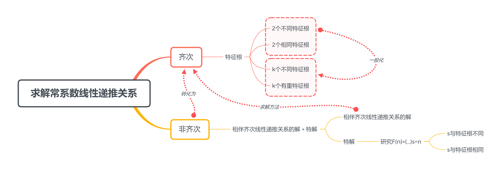

Part 01 Deeper Discussion About Recurrence Relations 递归关系的深入探讨
covering 8.1 ~ 8.2
Applications of Recurrence Relations 递归关系的应用
跟DP里找状态转移方程比较类似，此处略去。
Solving Linear Recurrence Relations 求解线性递归关系
I. Terminologies 术语
- linear（线性）：即所有含未知量的项都是一次
- homogeneous（齐次）：所有未知量移动到左边后，右边为0
- constant coefficients（常系数）：系数为常数
- degree（阶）：$a_n$与前面多少项相关
II. Solution 解法
基本思路：
先求通解，再由初始条件（初值）求出定解
以下部分只讨论通解的求解

Characteristic Equation and Characteristic Roots 特征方程与特征根
$ a{n}=c{1} a{n-1}+c{2} a{n-2}+\cdots+c{k} a_{n-k} $
对于上述递推关系，其特征方程为： $ r^{n}=c{1} r^{n-1}+c{2} r^{n-2}+\cdots+c{k} r^{n-k} $ 也即 $ r^{k}-c{1} r^{k-1}-c{2} r^{k-2}-\cdots-c{k-1} r-c_{k}=0 $ 其中 $r$ 就是此方程的特征根
背后的原理其实就是我们认为有一个初步的解的形态$a_n=r^n$，我们只需要在这个形态上按需调整即可。
之后的求解都是建立在这一认知之上的。
1. Homogeneous 齐次情况
1.1 二阶（入门、特殊）
$ a{n}=c{1} a{n-1}+c{2} a_{n-2} $
首先求出特征根$r1$、$r_2$，它们满足： $ r^{2}-c{1} r-c_{2}=0 $ 接下来分两种情况
情况1 两个特征根不同
此情况最基本，其解为： $ a{n}=\alpha{1} r{1}^{n}+\alpha{2} r_{2}^{n} $ 其中$a_1$、$a_2$为常数
原理：
$an=r_1^n$、$a_n=r_2^n$都满足$a{n}=c{1} a{n-1}+c{2} a{n-2}$，由于是线性关系，因此它们的线性和也满足关系式
证明：
$an=\alpha{1} r{1}^{n}+\alpha{2} r{2}^{n}$是解 $ \begin{aligned} c{1} a{n-1}+c{2} a{n-2} &=c{1}\left(\alpha{1} r{1}^{n-1}+\alpha{2} r{2}^{n-1}\right)+c{2}\left(\alpha{1} r{1}^{n-2}+\alpha{2} r{2}^{n-2}\right) \ &=\alpha{1} r{1}^{n-2}\left(c{1} r{1}+c{2}\right)+\alpha{2} r{2}^{n-2}\left(c{1} r{2}+c{2}\right) \ &=\alpha{1} r{1}^{n-2} r{1}^{2}+\alpha{2} r{2}^{n-2} r{2}^{2} \ &=\alpha{1} r{1}^{n}+\alpha{2} r{2}^{n} \ &=a{n} \end{aligned} $
给定初值后，解一定是$a{n}=\alpha{1} r{1}^{n}+\alpha{2} r_{2}^{n}$（或者说每个解都有这种形式）
等价于说明$\alpha_1$、$\alpha_2$唯一确定
假设初始条件为$a{0}=C{0}, a{1}=c{1}$，则： $ \begin{array}{l}{a{0}=C{0}=\alpha{1}+\alpha{2} } \ {a{1}=C{1}=\alpha{1} r{1}+\alpha{2} r{2} }\end{array} $
解得：$\alpha{1}=\frac{C{1}-C{0} r{2} }{r{1}-r{2} }, \alpha{2}=\frac{C{0} r{1}-C{1} }{r{1}-r{2} }$
在这样的一组$\alpha1$、$\alpha_2$之下，所有$\alpha{1} r{1}^{n}+\alpha{2} r{2}^{n}$满足要求，由于解的唯一性可知$a{n}=\alpha{1} r{1}^{n}+\alpha{2} r{2}^{n}$
注意到$\alpha_1$、$\alpha_2$的值依赖于$r_1\neq r_2$，由此引出情况2
情况2 两个特征根相同
记$r0=r_1=r_2$，则解为： $ a{n}=\alpha{1} r{0}^{n}+\alpha{2} n r{0}^{n} $
1.2 高阶（一般化、推广）
情况1 无重根
$ a{n}=\alpha{1} r{1}^{n}+\alpha{2} r{2}^{n}+\cdots+\alpha{k} r_{k}^{n} $
情况2 有重根
设有$t$个不等根$r{1}, r{2}, \cdots, r{t}$，其重数分别为$m{1}, m{2}, \dots, m{t}$ ($m{i} \geqslant 1, i = 1,2,...,t$ 且$m{1}+m{2}+\dots+m{t}=k$)，则解为： $ \begin{aligned} a{n}=&\left(\alpha{1,0}+\alpha{1,1} n+\cdots+\alpha{1, m{1}-1} n^{m{1}-1}\right) r{1}^{n} \ &+\left(\alpha{2,0}+\alpha{2,1} n+\cdots+\alpha{2, m{2}-1} n^{m{2}-1}\right) r{2}^{n} \ &+\cdots+\left(\alpha{t, 0}+\alpha{t, 1} n+\cdots+\alpha{t, m{t}-1} n^{m{t}-1}\right) r_{t}^{n} \end{aligned} $
2. Nonhomogeneous 非齐次情况
解法：
化归，转化为齐次情况（与线性代数中对付非齐次方程组的思想完全一致）
2.1 基本思想
对于常系数线性非齐次递推关系 (linear nonhomogeneous recurrence relation with constant coefficients) $ a{n}=c{1} a{n-1}+c{2} a{n-2}+\cdots+c{k} a{n-k}+F(n) $ 我们假设自己已经“求得”一个特解 (particular solution) $\left{a{n}^{(p)}\right}$
同时，它也存在一个相伴的齐次递推关系 (associated homogeneous recurrence relation) $ a{n}=c{1} a{n-1}+c{2} a{n-2}+\cdots+c{k} a{n-k} $ 利用之前的知识我们已经可以求出其解$\left{a{n}^{(h)}\right}$
那么对于这个非齐次的递推关系，我们有通解
$ \left{a{n}^{(p)}+a{n}^{(h)}\right} $
证明：
假设有一个特解$\left{a{n}^{(p)}\right}$以及通解的某种形式$\left{b{n}\right}$ $ a{n}^{(p)}=c{1} a{n-1}^{(p)}+c{2} a{n-2}^{(p)}+\dots+c{k} a_{n-k}^{(p)}+F(n) $
$ b{n}=c{1} b{n-1}+c{2} b{n-2}+\cdots+c{k} b_{n-k}+F(n) $
做差： $ b{n}-a{n}^{(p)}=c{1}\left(b{n-1}-a{n-1}^{(p)}\right)+c{2}\left(b{n-2}-a{n-2}^{(p)}\right)+\cdots+c{k}\left(b{n-k}-a{n-k}^{(p)}\right) $ 由此注意到$\left{b{n}-a{n}^{(p)}\right}$是相伴的齐次递推关系的通解，即$\left{a{n}^{(h)}\right}$
由解的唯一性知：$b{n}-a{n}^{(p)} = a{n}^{(h)}$，即： $ b{n}=a{n}^{(p)}+a{n}^{(h)} $
现在问题转化为了齐次通解 + 非齐次特解。齐次通解已经可求；对于简单的递推关系，非齐次特解可以通过拼凑获得，但是复杂的式子特解并不容易直接看出，由此引出下一个话题——特解的求解。
2.2 求特解
研究$F(n)$ $ F(n)=\left(b{t} n^{t}+b{t-1} n^{t-1}+\cdots+b{1} n+b{0}\right) s^{n} $ 此时又分两种情况：
情况1 s不是相伴齐次递推关系的根
此时有如下形式的特解： $ \left(p{t} n^{t}+p{t-1} n^{t-1}+\cdots+p{1} n+p{0}\right) s^{n} $
情况2 s是相伴齐次递推关系的根
假设此根的重数为$m$，则有如下形式的特解： $ n^{m}\left(p{t} n^{t}+p{t-1} n^{t-1}+\cdots+p{1} n+p{0}\right) s^{n} $